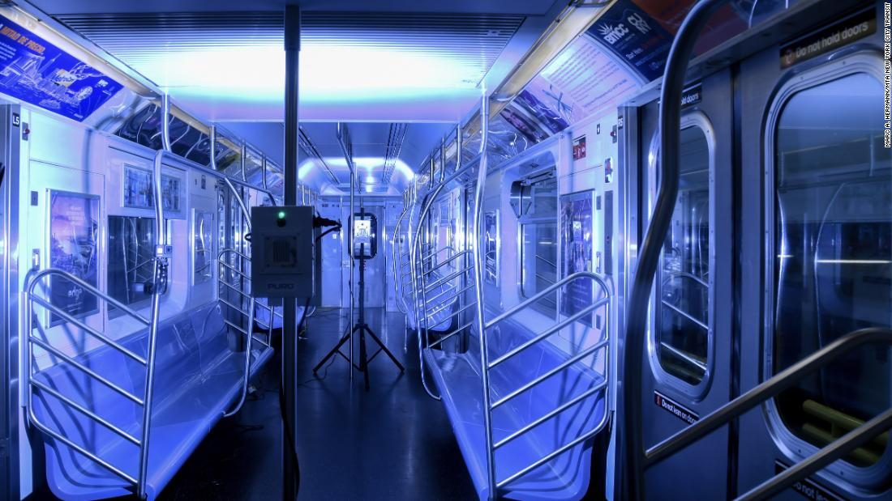
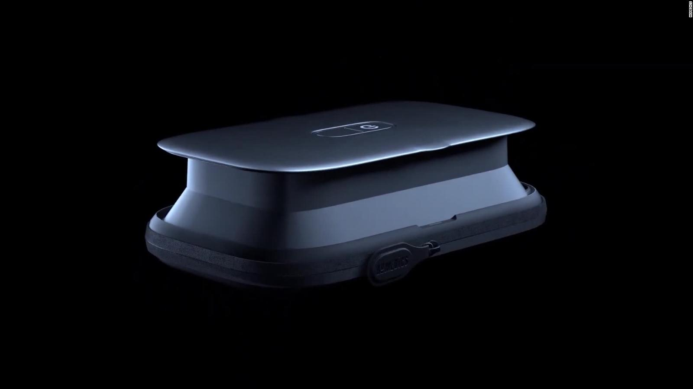
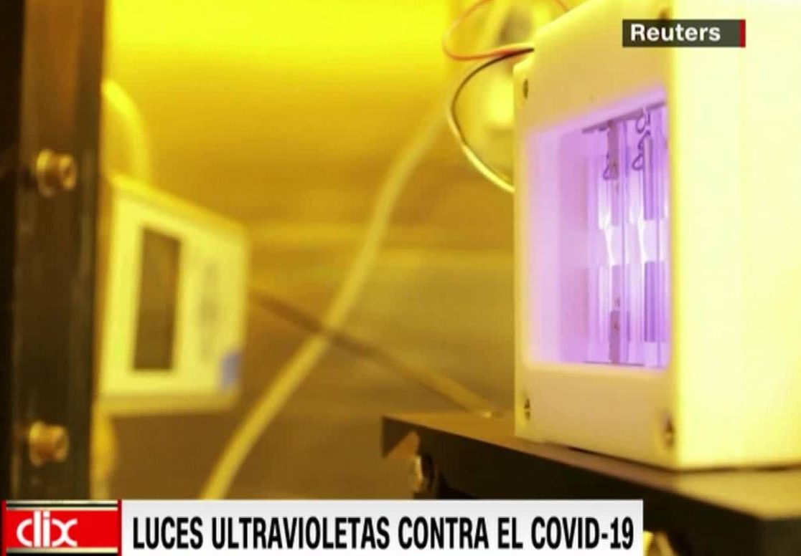

Coronavirus: lanzan en Nueva York programa piloto de luz ultravioleta para matar el covid-19 en el transporte público
3:59
(CNN) – La agencia encargada del transporte público de la ciudad de Nueva York anunció un programa piloto que utiliza lámparas de luz ultravioleta para matar el covid-19 en autobuses, trenes y estaciones.
La Autoridad Metropolitana de Transporte (MTA, por sus siglas en inglés) informó en la noche de este martes que utilizará '150 dispositivos móviles de dos cabezales' del emprendimiento PURO Lighting, cuya sede está en Denver, para determinar la eficiencia y la rentabilidad de la tecnología de luz UVC, según un comunicado de prensa.
Se ha demostrado que la UVC, uno de los tres tipo de luz en el espectro ultravioleta, elimina el covid-19 y es más potente contra los virus y bacterias, señaló PURO Lighting.Esta compañía indicó que sus lámparas también cuentan con luz UVA y UVB para el espectro completo de desinfección.
La primera fase de esta medida empezará en el metro y los autobuses de la ciudad, así como en las instalaciones de tránsito, a principios de la próxima semana, dijo la MTA.Y si el programa piloto tiene éxito se extenderá a los trenes de Long Island Rail Road y Metro-North Railroad en una segunda fase.Los dos ferrocarriles sirven a los suburbios de la ciudad de Nueva York.
Las lámparas se utilizarán durante el cierre nocturno en los trenes subterráneos y en los períodos en los que el tránsito está fuera de servicio.
'Este es el primer (programa) piloto de su tipo en agencias de transporte de todo el mundo y estamos orgullosos de ser parte de él', señaló el presidente ejecutivo de MTA, Patrick Foye. 'Durante casi tres meses, la MTA ha trabajado sin descanso para desinfectar toda nuestra flota de trenes subterráneos y autobuses, pero siempre hemos prometido que exploraríamos todos y cada uno de los nuevos enfoques disponibles para nosotros.El lanzamiento de este piloto de UVC representa una siguiente paso prometedor en nuestros esfuerzos continuos para identificar tecnologías que puedan mantener a nuestros clientes y empleados lo más seguros posible'.
Por primera vez en sus 115 años de historia, la ciudad de Nueva York cerró todo su sistema de metro durante la noche desde el pasado 6 de mayo para limpiar su flota.
La MTA promociona que la luz UVC es 'una tecnología eficiente, probada y efectiva para eliminar virus, incluido el SARS-CoV-2 que causa el covid-19'.También indica que se ha demostrado que esta luz mata virus en salas quirúrgicas de hospitales, clínicas de atención de urgencias, universidades, y estaciones de bomberos.La primera fase se centrará en el material rodante de los vehículos, estaciones y áreas de patio, explicó la MTA, así como en instalaciones ocupacionales, salas de tripulación y otras áreas compartidas.
Las lámparas de iluminación desinfectante utilizan luces de alta intensidad de todo el espectro UV que se pueden instalar en el techo o la pared, según un comunicado de prensa de PURO Lighting.Imágenes de la MTA muestran las unidades ubicadas en postes en el medio de un vehículo.La unidad desinfecta tanto los patógenos de la superficie como aquellos que están en el aire y elimina hasta el 99,9% de los virus y bacterias, de acuerdo a la compañía.
La MTA también destacó que le pidió al Dr. David Brenner, director del Centro de Investigación Radiológica de la Universidad de Columbia, que examinara la eficiencia de las lámparas.Esta semana, el Dr. Brenner informó que su prueba mostró que la luz UVC eliminó el covid-19, y está trabajando en realizar pruebas adicionales para la publicación de revisión por pares, completó la agencia.
La MTA comenzó a trabajar con PURO a mediados de marzo para probar la capacidad de la tecnología de luz como parte de un esfuerzo por encontrar soluciones eficientes de limpieza para el metro.La agencia también ha estado analizando el uso de antimicrobianos para desinfectar y prevenir el crecimiento del virus por períodos más largos.Foye dijo en una entrevista con PIX11 el viernes que continúan investigaciones con antimicrobianos, lo cual es 'muy prometedor', y esperan 'noticias positivas a corto plazo'.
Posted On: 2020-05-20T00:00:00
Posted By: Taylor Romine



Content Date: 2020-05-20
Download Date: 2021-03-17
Document ID: L0C0495WO